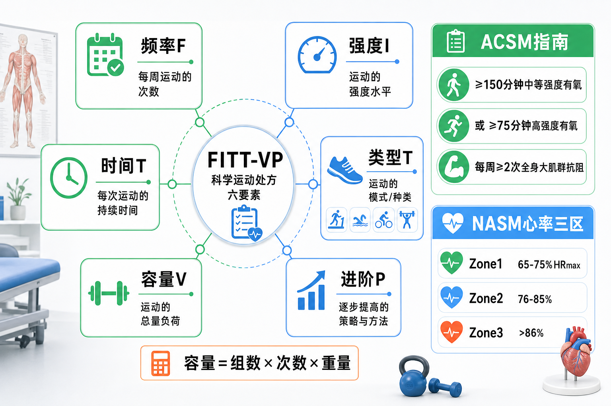

Day 30 · FITT-VP训练变量与ACSM身体活动指南
从“今天练什么”升级到“处方怎么开”：变量、强度、容量、心率区间和最低健康剂量。
一句话总结
FITT-VP 像训练处方六个旋钮：先满足 ACSM 健康底线，再按目标调频率、强度、时间、类型、容量和进阶。

看图顺序：中间是 FITT-VP 六变量，右侧是 ACSM 成人活动底线，下方用容量公式和 NASM 心率三区把训练剂量量化。
核心要点
- FITT-VP：训练计划不是动作清单，而是六个变量共同组成的运动处方。训练例子
字面意思
FITT-VP = Frequency 频率、Intensity 强度、Time 时间、Type 类型、Volume 容量、Progression 进阶。
大白话
像开药方：多久吃一次、吃多大剂量、吃多久、吃哪种药、总量多少、何时加量。
为什么重要
同一动作换变量，训练效果完全不同。深蹲 3 次大重量偏力量，15 次中轻重量偏肌耐力或增肌。
给久坐客户开有氧处方，不能只写“跑步”。要写每周 3-5 次、每次 20-40 分钟、中等强度、走跑或车、周总分钟数、两周后如何加量。
常见误解❌以为计划只要动作够多。✅其实变量不清，教练和客户都无法判断刺激够不够、能不能进阶。
- 频率F：一周练几次，决定刺激出现得够不够密。底层机制
频率不是越高越好，而是刺激和恢复之间的节奏。频率太低，适应信号断断续续；频率太高，疲劳可能盖过进步。
真实例子初学者全身抗阻每周 2-3 次，常比 6 天分化更容易学动作和恢复。心肺健康目标通常每周 3-5 次中等强度活动更稳。
训练含义频率要看总量分配。每周 12 组胸肌可放在 2 次或 3 次；若单次太累、后半段质量差，拆高频通常更好。
常见误解❌以为“多练一天就一定更好”。✅如果总恢复不够，多出来那天可能只是堆疲劳。
- 强度I：训练有多重、多快或多接近极限，决定刺激方向。
字面意思
抗阻强度常用 %1RM 或 RM 区间表示；有氧强度常用心率、RPE、谈话测试或速度功率表示。
大白话
强度像油门。油门轻适合打基础和恢复，油门深适合力量、速度或阈值刺激，但不能天天踩到底。
考试锚点
力量常 ≥85%1RM、少于 6 次；肌肥大多 67-85%1RM、6-12 次；肌耐力常低于 67%1RM、多于 12 次。
常见误解目标 典型强度 典型次数 训练含义 最大力量 ≥85%1RM <6次 神经驱动和高张力优先，休息更长 肌肥大 67-85%1RM 6-12次 张力、容量和接近力竭共同作用 肌耐力 <67%1RM >12次 重复输出和局部耐受优先 爆发 30-85%1RM 速度限制 重量不一定最大，但每次都要快 ❌以为爆发训练越重越爆发。✅爆发看速度意图和功率输出，负荷过重会把速度压没。
- 时间T与类型T：每次持续多久、用什么运动形式，必须贴合目标和人群。底层机制
时间决定单次暴露长度，类型决定动作模式和供能路径。10 分钟快走、30 分钟骑车、45 分钟抗阻，对身体发出的信号不同。
真实例子减脂客户可用快走、椭圆机、自行车等低冲击有氧增加周总活动量；力量客户仍要保留主项和专项辅助，不能只靠有氧堆消耗。
训练含义类型要先考虑安全和可坚持。膝痛久坐客户未必适合一开始跑步，快走、车、游泳更容易积累 ACSM 推荐运动量。
常见误解❌以为只有跑步算有氧。✅快走、骑车、游泳、划船机、舞蹈、爬坡都可以，只要强度和时间达标。
- 容量V：总训练负荷要能被记录，抗阻常用组数×次数×重量。真实例子
字面意思
Volume = 容量或总量。抗阻训练常算作组数 × 次数 × 重量，也可按每肌群周有效组数估算。
大白话
强度是单口有多辣，容量是一顿吃了多少。单口很辣但吃很少，和中等辣吃很多，身体反应不同。
为什么影响训练
容量太低，增肌和技术重复不足；容量太高，关节压力和系统疲劳上升，恢复追不上。
卧推 60kg × 10 次 × 3 组 = 1800kg 容量。若下周 62.5kg × 10 × 3，容量和强度都提高；若 60kg × 12 × 3，容量提高但强度不变。
常见误解❌以为容量只看训练时长。✅抗阻训练中，坐在健身房 90 分钟不等于高容量；要看实际有效组、次数和负荷。
- 进阶P：适应后再小步加变量，进阶要可恢复、可追踪。底层机制
Progression = 进阶。它把 Day29 渐进性超负荷落到计划里：先稳定动作，再加一个变量，观察恢复和表现，再决定下一步。
真实例子久坐客户第 1 周快走 20 分钟×3 次，第 2 周到 25 分钟×3 次，第 3 周加到 30 分钟或增加 1 次。一次只加时间或频率，便于判断反应。
训练含义进阶不是每次都更难。若睡眠差、疼痛升高、动作变形，计划可维持或轻降，这仍是专业进阶。
常见误解❌以为退一步就是失败。✅计划里短期降量常是为了保留长期进步。
- ACSM指南：成人健康底线是每周有氧量达标，加至少两次全身抗阻。真实例子
字面意思
ACSM 是 American College of Sports Medicine，美国运动医学会。这里考的是成人身体活动最低建议。
大白话
这是“不要太少”的健康底线，不是运动员训练上限。先达标，再谈专项优化。
考试锚点
每周 ≥150 分钟中等强度有氧，或 ≥75 分钟高强度有氧；再加每周 ≥2 次全身大肌群抗阻。
客户每周快走 30 分钟×3 次 = 90 分钟中等强度，未达 150 分钟；若再加两次全身抗阻，只满足抗阻部分，有氧仍不足。
训练含义久坐客户不必一开始追求复杂周期化。先把周活动分钟数和两次全身抗阻稳定下来，就是高价值改变。
常见误解❌以为每周两次力量就等于 ACSM 全部达标。✅力量只是其中一半，有氧分钟数仍要算。
- NASM心率三区：用心率把有氧强度分层，再和 Karvonen 公式配合。Karvonen 连接
字面意思
Zone1 = 65-75%HRmax，Zone2 = 76-85%HRmax，Zone3 = >86%HRmax。HRmax 是最大心率。
大白话
像给发动机分挡：一挡打基础，二挡提高有氧能力，三挡接近无氧阈值，不能长时间乱用。
为什么影响训练
同样 30 分钟有氧，Zone1 更稳，Zone2 更挑战，Zone3 疲劳大。强度区错了，训练目的和恢复成本都会变。
Karvonen 公式用心率储备估算目标心率：目标心率 = (HRmax - 静息心率) × 目标强度% + 静息心率。它比只看 HRmax 百分比更个体化。
常见误解❌以为燃脂只能 Zone1。✅脂肪供能比例在低强度更高，但总消耗、训练目标和可恢复性也要一起看。
常见误区
❌很多人以为 FITT-VP 是六个英文缩写背诵。✅其实它是训练处方检查表，每个变量都要能落到计划。
❌很多人以为 ACSM 指南等于增肌或减脂最佳计划。✅它是健康底线，不是专项最优方案。
❌很多人把强度和容量混在一起。✅强度描述单次刺激多重或多难，容量描述总训练负荷有多少。
记忆口诀
“频强时类，容量进阶；一五零有氧，两次抗阻；心率三档，目标配方。”
翻转卡复习
实操关联
- 肌肥大：频率每肌群每周 2-3 次，强度多在 67-85%1RM，6-12 次为主，用周有效组数追踪容量。
- 最大力量：主项高特异性，≥85%1RM、低次数、长休息，进阶优先小幅加重或加高质量组。
- 久坐健康：先把每周 150 分钟中等有氧和 2 次全身抗阻做稳，再追求更高强度。
- 减脂：用有氧分钟数和力量训练保肌肉，容量增加要慢，避免疲劳让日常活动量下降。
- 爆发训练：负荷可在 30-85%1RM，关键是速度不掉太多；每组停止在输出变慢前。
- 教练记录：每次计划至少写清频率、强度、时间、类型和进阶规则，不用“适量运动”这种空话。